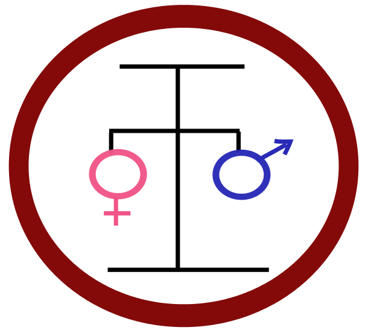
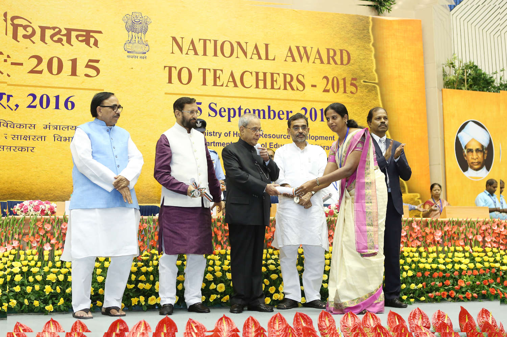
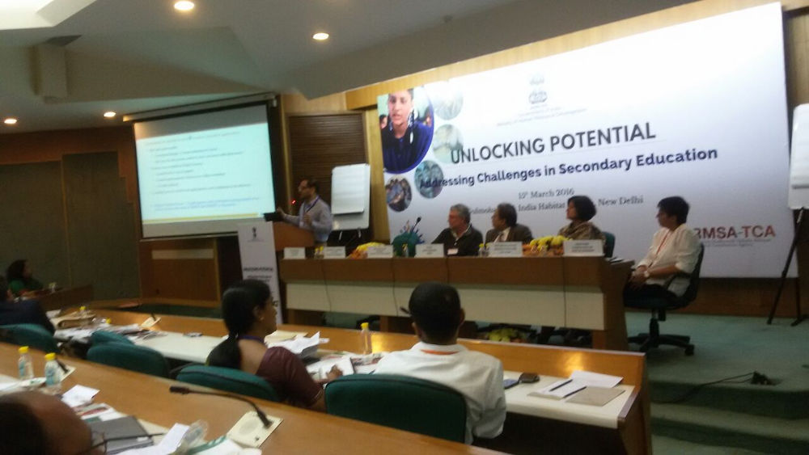
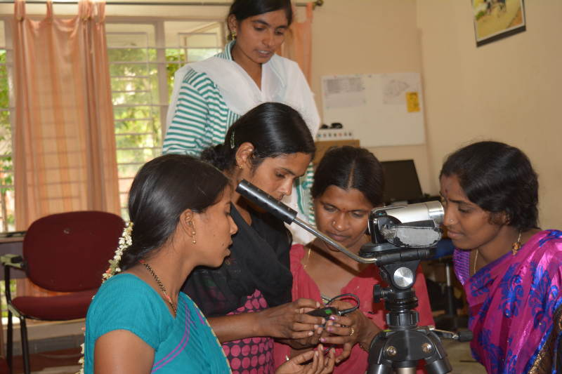
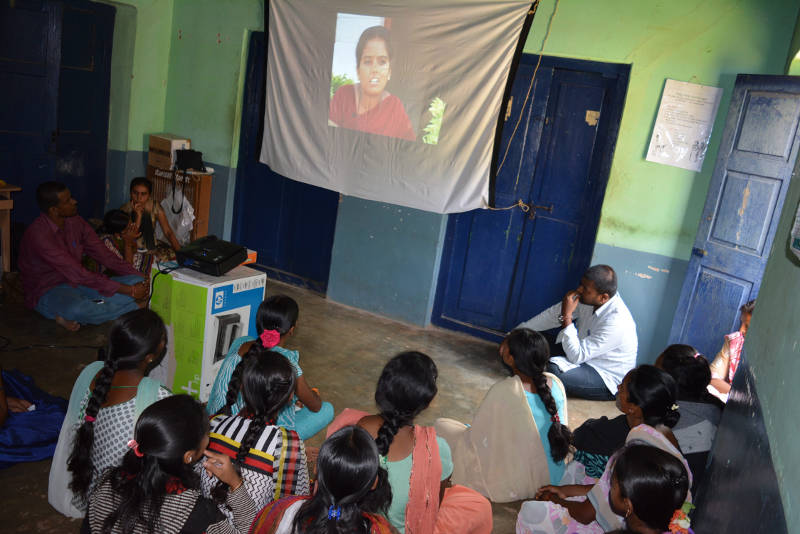
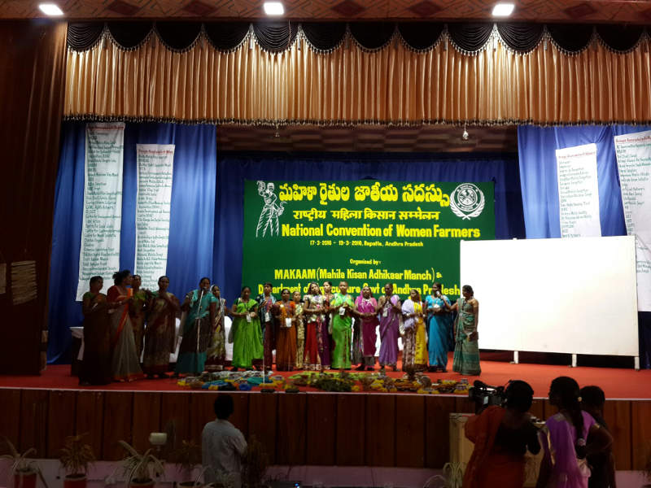
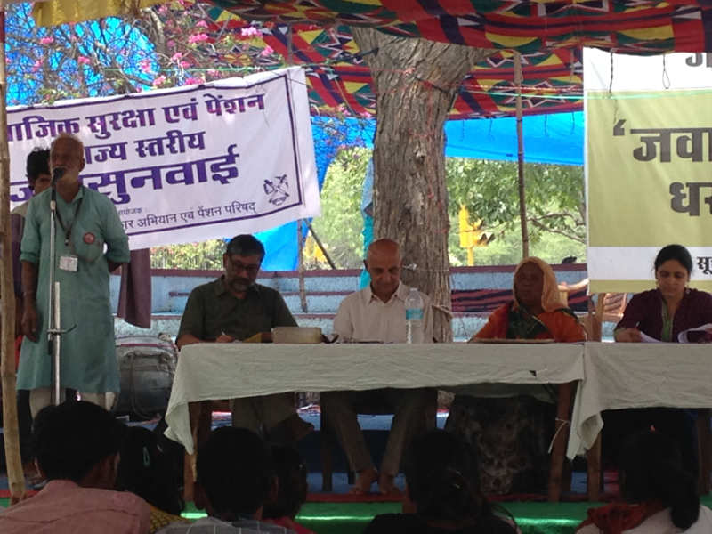

At IT for Change, individuals from a wide range of disciplinary backgrounds, professional expertise and skill sets work with a shared commitment towards progressive social change. Working across a multitude of settings whether in schools, institutions of governance, or the field, our team is constantly pushing the envelope with innovative ideas, leaving no stone unturned in our field projects, coalition building, consulting, research and advocacy projects.





The last decade has seen a worrying dominance of ICT providers taking over the education space, with an often unabashed commercial motive. ITfC has played a crucial role of mobilising and guiding academics to step in at significant junctures and advocate for a critical understanding of ICTs in education.
Anita Rampal, Faculty of Education, Delhi University
The focus of our work continues to be on demonstrating models of technology integration in education and using this experience to provide inputs for policy and curriculum. Strengthening public education through curricular changes, building teacher networks and institutional development are the areas of focus.
 |
| Students in ICT Class |
IT for Change’s intensive pilot with 16 government high schools in one block of the Bengaluru Urban district completed its second year in 2015-16. This programme has been able to demonstrate the strengthening of the ‘public institution’ identity among schools through collectivising the teachers and head masters. Interacting through mobile based groups and email groups, the head masters and teachers are sharing information about their schools, celebrating best practices amongst schools, discussing their challenges and exploring new learning and teaching possibilities using ICTs.
TCOL in the media - Showcasing the public school |
| Science exhibition |
A professional learning community approach for sustained teacher development has been successfully demonstrated all over in Karnataka through the Subject Teacher Forum (STF) programme. At the end of five years, with a network of over 20,000 teachers, across all core subject areas, the programme has demonstrated that a ‘Professional Learning Community’ can be an effective method of teacher professional development, supporting self learning, peer learning as well as sustainable creation of contextual Open Educational Resources.
 My relationship with ITfC started from June 2011, through the STF programme. ITfC has deeply impacted the way teachers are looking at teaching and resource creation through the use of multiple educational tools and processes; whether it is making a video or using a simulation or undertaking a community survey. Thanks to the STF programme, in my view, Karnataka teachers are one step ahead of others, in using ICT for teaching. ITfC has made teachers understand themselves as self-confident and empowered professionals, in short, real teachers. |
 |
| Sharing the STF model of Teacher Education, at the ‘National Conference on Secondary Education’, March 2016 |
Seeing the STF programme as inherently scalable and sustainable, because of its systemic integration, the Telangana and Assam education departments also began a similar programme for building professional learning teacher network in the last year. The keenness amongst the Assam teachers to learn ICTs in a challenging environment exposed the bogey of ‘teachers are not interested in learning ICTs', and reinforced the importance of situating ICTs within relevant educational contexts, aims and priorities of the teachers.
 |
| DIET Principals in Workshop |
IT for Change facilitated workshops for State Council Education Research and Training (SCERT) Directors and for Karnataka District Institute of Education and Training (DIET) Principals at Regional Institute of Education (RIE) Mysuru, in collaboration with Commonwealth Education Media Centre for Asia (CEMCA) and RIE Mysuru, on ICT integration in Education. Education seniors usually have limited exposure to ICTs, both from critical understanding, as well as from techno-pedagogical skill perspectives. These workshops attempted to foreground the important role being played, and the potential of ICTs in school education and teacher education.
IT for Change completed its research on the STF and Karnataka Open Educational Resources (KOER) programme as part of the Research on Open Educational Resources for Development (ROER4D) research network, supported by IDRC, Canada. The research report suggests that participatory processes in the teachers' professional learning communities supported strengthening of individual and collective teacher agency and encouraged OER creation and adoption. An important factor that emerged was the significance of a free and open technology environment in the creation of OERs; this was also underlined in a blog written for the ROER4D network, ‘The means are the ends’.
A case study was published on the STF and KOER by the Wawasan Open University, as an example of a collaborative Open Educational Resources creation and adoption model within the public education system.
 |
| Students at TISS "ICT and education" MA course |
A strong relationship with the public education system gives IT for Change the credibility and opportunity to influence curriculum. During the year we designed and transacted a course for ICT integration in Education for the B.Ed programme at Vijaya Teachers College, Bangalore University, the pre-service teacher education programme for high school teachers. IT for Change team members were also the faculty in the ‘Education leadership and management’ and ‘ICT and education’ courses in the MA Education programme at TISS Hyderabad.
An IT for Change team member was the convenor of the group constituted by the Directorate of Educational Research and Training (DSERT), for reviewing and developing the curriculum for ICT mediation course for the D.El.Ed programme. IT for Change was also invited by the Ministry of Human Resources and Development (MHRD) to contribute to the New Education Policy of Government of India, in the area of ICT and education.
The STF programme has demonstrated systemic capacity building at the state level, whereas the TCOL programme has demonstrated institutional capacity building at the school level. The larger teacher networks at the state level and the various local teacher collectives are emerging as spaces where teachers are participating and engaging with new learning possibilities and debating on various issues in education. The STF programme has attracted national attention with the MHRD recommending it to other states, through its formative assessment report in secondary education in-service teacher training, and in its national conference on secondary education in March 2016.
In the year 2016-17, IT for Change will take the experiences and learnings from the STF and KOER programmes to different geographies including Telangana and Assam. As an extension of our ROER4D project, we will study actual OER adoption processes by teachers. We also plan to deepen our school level demonstration project by extending it to the elementary school level.
Go back to Thematic Areas
ITfC does the difficult job of interrogating the ‘open free world’ ushered in by Information Technology at a time when it is claimed to be the fix to almost all the world's problem and has the power to connect, communicate and mobiise people for social change.
Sejal Dand, Founder Director ANANDI
A field resource centre supporting grassroots organisations and local governance institutions in Mysuru, India. Using ICT-enabled strategies, Prakriye seeks to build insights on a radically new development praxis that brings power to the peripheries.
In the year 2015-16, the Prakriye field centre continued to work towards the consolidation of its decade-old information centre based strategy that has focused on building vibrant civic-public spaces for women’s collectives. Since 2005, Prakriye has been operating seven ICT-enabled information centres in Hunsur and H.D.Kote blocks of Mysuru, in partnership with women’s collectives on the ground. Each information centre caters to four to five villages in its area, and is engaged in public information outreach, providing assistance to members of marginalised socio-economic groups in filing entitlement applications, and citizenship education. Young women information intermediaries, recruited from the local community and trained by the Prakriye field team, manage the everyday operations of the centres. The information intermediaries deploy a range of techno-social strategies in their work – mobile phone-based informational networking through an Open Source Interactive Voice Response (IVR), participatory informational video production, digital Management Information System (MIS) tracking and video-based peer learning methods.
In the past year, the infomediaries of the seven centres convened 52 special meetings for information outreach, organised over 250 small group meetings of local women’s collectives, and assisted in the processing of 459 entitlement-claims. 80 voice messages on key issues such as updates about departmental schemes, health and nutrition, sanitation, girls’ education and gender-based violence were scripted and recorded by the infomediaries, and disseminated amongst to 600 community members in Prakriye’s operational area. Both fictional and non-fictional formats were used.
 |
| Sakhis at a video training workshop in the Mysuru office |
Prakriye also launched a video newsletter ‘Nodu Sakhi’ (Watch, my friend) to trigger dialogues with women’s collectives on gender and governance issues. In collaboration with the infomediaries and key women leaders from local communities, informational and thought-provoking short films were produced and compiled into a 15-minute long monthly newsletter that was then disseminated through community screenings. These screenings acted as a catalyst for discussions on women’s leadership, pathways to socio-economic empowerment, and accountability of local government. Nine episodes of the video newsletter have been produced and taken to 3355 community members across 40 villages, through 178 village-level screenings.
Two community media campaigns – on girls’ education and the gender dimensions of the right to sanitation – have been carried out in a concerted manner by the infomediaries in Prakriye’s operational area by leveraging the video newsletter and the IVR messaging system.
Prakriye has been investing in building the institutional capacities of the women’s collectives managing the information centres in its operational areas. In two of the older village information centres, the field team has gradually begun to withdraw its supervision to allow local women who are part of the managing committee to shape agendas more autonomously. For the other information centres, the Prakriye team is developing a plan to foster greater independence in shaping work plans and priorities.
 |
| Prakriye facilitators debrief a video screening in Mullur village |
In H.D.Kote block, the Prakriye team established a robust working relationship with the Department of Women and Child Development (DWCD). As a result, Prakriye has managed to deepen community outreach on health and nutrition, and early childhood development. It has also expanded the managing committees of the information centres in this block to include anganwadi supervisors (staff of government-run child care centres) and the local network of ICDS sanghas (women’ collectives established by DWCD).
In Hunsur Block, the Prakriye team collaborated with the Public Health Research Institute, a local NGO, to conduct cervical cancer screenings for 200 women in Hunsur block. Further, general health camps were organised in this block in partnership with Primary Health Centres.
In addition to the continued and intensive efforts of Prakriye in the field, Anupama Suresh represented the centre at critical national and international spaces of development dialogue during the year. She contributed critical insights from the ongoing work on designing ICT-enabled models for convergent information and service delivery and citizen-education, to the following discussions:
Making Women’s Voices and Votes Count was a two-year project (January 2012-December 2014) that aimed at building an innovative digitally-enabled model for strengthening the leadership of elected women in local government and their linkages to women’s collectives at the grassroots. This project was supported by UN Women and National Mission for Empowerment of Women, Government of India. Prakriye implemented the project in Mysuru and also partnered with ANANDI and Kutch Mahila Vikas Sanghathan, two longstanding grassroots women’s rights organisations, in building the institutional ICT capacities of their elected women’s federations in Bhavnagar and Kutch districts of Gujarat.
In April 2015, IT for Change convened a meeting in Bengaluru to share key insights from the project, which was attended by leading feminist scholar-practitioners and central and state-level government officials. Acting upon the suggestions received at the meeting about the need for wide dissemination of the learnings from the project, Prakriye prepared a detailed process document.
The Prakriye field centre has consolidated its information centres strategy, strengthened institutional linkages, and also connected to key global and national spaces where policy debates are shaped. In March 2016, Prakriye centre received funding from the South Asia Women’s Fund to enter into a new area of work – developing an innovative ICT-enabled capacity building model for strengthening the agency, autonomy and leadership of adolescent girls.
Go back to Thematic Areas
We have valued our work with IT for Change in pioneering a gender analysis of e-government for women's empowerment in the Asian and Pacific region. Their genuine commitment to women's empowerment invigorates academic debate and enquiry and their research displays an intellectual rigour grounded in principles of human rights and social justice.
Gender Equality and Women's Empowerment Section, Social Development Division, ESCAP
Through our research, advocacy and network-building efforts on gender and ICTs, we offer a critical perspective on technology and gender relations. We seek to be theoretically grounded in our ideas of gender justice in a world being reconstituted digitally, rejecting both tech-euphoria and techno-skepticism.
In the year 2015-16, IT for Change led a multi-country research study in the Asia-Pacific aimed at identifying the conditions under which e-government design and implementation can further women’s empowerment and gender equality. This study, supported by the United Nations Economic and Social Commission for Asia and the Pacific (UNESCAP) and the United Nations Project Office on Governance (UNPOG), used an institutional analysis framework to evaluate the critical constituents of e-government ecosystems – service delivery, citizen uptake and connectivity – for their ability to deliver gender responsive governance. As part of this project, a state of play analysis with respect to e-government policies and interventions in five countries (Australia, Fiji, India, the Philippines and the Republic of Korea), along with in-depth case studies of twelve good practices were developed. The study was successful in distilling the key ingredients of gender-responsive service delivery, citizen uptake and connectivity architectures as part of abstracting the ‘what’ and ‘how’ of the e-government road-map for gender justice.
UNESCAP and IT for Change plan to extend the study to two additional sites, Malaysia and Sri Lanka, in 2016. Additionally, Phase-2 of the study will be initiated in September 2016, where insights from Phase-1 will be crystallised into a capacity-building programme for policymakers in the region, through the development of ‘training of trainer’ modules on strategies to implement and promote gender-responsive e-government.
IT for Change provided advisory inputs to the overall framework, and undertook the India component, of a Web We Want (WWW) Foundation study on ‘ICTs for empowerment of women and girls’. This report, released at the Stockholm Internet Forum in October 2015 was a 10 country study that examined the patterns of use of web-enabled ICTs among urban poor women in 10 capital cities in the global South. The objective was to discern, to what extent, usage patterns led to an expansion of informational, associational and/or communicative capabilities. The study’s main finding was that dramatic mobile phone diffusion, in and of itself, was not adequate to expand marginalised women’s access to the Internet or open up meaningful use-cultures.
IT for Change also wrote an independent commentary de-constructing the findings from the India component of the research study, puncturing the myth of Facebook use being an automatic gateway to wider information networks, greater social capital or new employment opportunities. This analysis was picked up in global media coverage on the key insights of the Women’s Rights Online study.
WWW Foundation proposes to continue the work of the ‘Women’s Rights Online’ network, through initiating a ‘Digital Gender Gap’ audit in all 10 countries where the research was carried out, as part of deepening the investigation of barriers to women’s access and use of the Internet (such as affordability, digital skills and education, pervasiveness of online violence, lack of relevant informational and knowledge resources etc.) IT for Change, as a country partner, will be involved in this next phase.
This year, IT for Change has worked intensively towards infusing gender perspectives into mainstream theoretical frameworks on data governance and data politics. In July, IT for Change was invited to be a part of the panel on 'Gendering Global Media Policy: Critical Perspectives on Digital Agendas', at International Association for Media and Communication Research (IAMCR) 2015. IT for Change’s presentation critically analysed the flagship 'Digital India' programme of the Government of India, to demonstrate how the state's digital agenda creates new versions of patriarchy through carefully managed assertions and erasures – reducing women’s empowerment into a de-politicized idea of access. Subsequently, IT for Change was invited to develop the presentation into a paper for a special issue on gendering media policy, of the Journal of Information Policy (to be published in end-September 2016).
In February 2016, Anita Gurumurthy was a Gender Expert Reviewer to the Topic Guide on ‘Open Data and Accountability’ being developed by Governance and Social Development Resource Centre. The review pushed for the need to move beyond mainstream gender-neutral theories of open data, and develop alternative frameworks that can capture historical, embodied continuities in the social inscription of data. Anita Gurumurthy and Nandini Chami also contributed an essay on ‘Data: The new four-letter word for feminism’ to a special issue of GenderIT on ‘Imagining a Feminist Internet’, that focused on evolving a feminist critique of unbridled data mining and big-data based decision-making.
In 2015-16, IT for Change made several interventions through its writings, collaborations, and outreach and advocacy efforts in key national and global policy spaces.
 |
| Anita Gurumurthy at National Women Farmers' Convention, January 2016 |
Recognised as an idea leader at the intersection of women’s rights and digital democracy, IT for Change has been successful in creating a push for critical feminist analysis in domains where theory-building has largely been gender-blind – such as data politics. Leveraging its unique position as an organisation of scholar-practitioners, IT for Change has been able to make a key difference in policy debates on technologies and development in global and national advocacy spaces.
Next year, IT for Change looks forward to taking forward the research collaboration with UNESCAP on gender and e-government, and contributing to the Digital Gender Gap audit of the Women’ Rights Online network.
Go back to Thematic Areas
IT for Change has consistently played a role in disseminating information about the socio-political consequences of use of technology in governance. I find that IT for Change serves as an important platform to unpack perceptions about the alleged neutrality of technology in developmental efforts, by bringing together a diverse set of stakeholders from CSOs, Government, academic institutions and software professionals, thereby nurturing informed discussion on the topic.
Rakshita Swamy, Mazdoor Kissan Shakti Sangathan, India
In times of techno-mediated governance, IT for Change seeks to further the agenda of ‘deepening democracy’. Our work argues the need for bringing citizen rights and the standpoints of the marginalised to the centre of digitalised service delivery, public information systems and open data.
 |
| Anita Gurumurthy at the Jawabdo Dharna organised by Mazdoor Kisan Shakti Sangathan (MKSS), June 2016 |
In February 2016, IT for Change initiated Voice or chatter? – a nine-country research study that aims at moving beyond an agency-centric approach to mapping ICT-mediated citizen-participation in contexts of the global South. Through in-depth case studies in a number of areas including open data, open budgeting, and networked municipalities to crowd-sourcing for urban planning and web-based grievance redress systems, the year-long research study explores how the interplay of institutional and ICT structures leads to shifts in norms, meanings and power relations underpinning the state-citizen relationship. This study is supported by the Making All Voices Count (MAVC) research consortium.
In July 2015, IT for Change participated in the Write-shop for state governments, on Participatory Planning for Gram Panchayat Development Plan, organised by the Ministry of Panchayati Raj (Government of India), at the Kerala Institute of Local Administration, in July 2015. Our submission focused on the digital opportunity for deepening local democracy – advocating the creation of ICT-enabled Gram Sabha Resource Centres to support participatory planning processes. Specific learnings from the information centres strategy of the Prakriye field centre were shared at the event.
In December 2015, Anita Gurumurthy made a presentation to the Joint Secretary, Ministry of Women and Child Development on the key highlights of the information centres strategy of the Prakriye field centre. The work of the centres between 2014-15 had been partly supported by the National Mission for Empowerment of Women, Government of India under its Poorna Shakti Kendras pilot project. The presentation also served as a ‘report-back’ of the key learnings from the pilot, on effective ICT-enabled, gender-inclusive service delivery.
Working on the Voice or Chatter? research study has helped the IT for Change team in deepening their theoretical understanding of the new governance paradigm – characterised by algorithmic decision-making and ‘rule by data’. The team plans to use the insights emerging from the study to trigger a national level civil society dialogue on rethinking democratic accountability in the current context where information, consultation, citizen feedback and public decision-making are becoming increasingly datafied – examining specifically laws and protocols on data that cover privacy safeguards, transparency and accountability considerations (including open data practices), social ownership of data, regulation of the data economy.
Go back to Thematic Areas
A characteristic of IT for Change, unusual in the research sector, is its ability to analyse and engage with both local grass-roots development issues and high level policy. This is central to being able to link social justice issues with Internet Governance structures; and to introduce an element of genuine democracy into the Internet governance domain.
Sean O Siochru, Nexus Research and long-standing Communications Rights Activist, Ireland
In our engagement with Internet governance, we strive to democratise technologies and their control, and for this purpose, advocate appropriate global and national governance models. We are working to build a people’s movement in this area, for no serious shift of power can take place without a struggle by those who desire it.
In 2015, IT for Change contributed to significant policy and advocacy interventions under the umbrella of the Just Net Coalition (JNC). JNC participated in the stakeholder consultation of the World Summit on the Information Society (WSIS) plus ten review, in which it flagged the importance of reviewing the current ways of Information Society governance and the need to develop high level principles. Critiquing the truncated review process at the formative stage, JNC presented written submissions to the General Assembly's overall review of the WSIS outcomes, issued comments on the WSIS non-paper and zero draft, and presented a high level policy statement at the WSIS forum.
JNC also co-signed civil society statement at the First Committee on cyber disarmament and human security at New York.
IT for Change was also involved in drafting JNC’s comments on the IANA Stewardship Proposal (the transition of IANA functions from NTIA to the ICANN multistakeholder committee). This submission stressed how in the name of multistakeholderism, industry has been given disproportionate importance, and governments an insufficient role, in deciding public policy matters. JNC has also been critical of the US domination and the undemocratic nature of the IANA transition process.
In October 2015, IT for Change attended a pre-Internet Governance Forum meeting in Joao Pessoa, hosted by APC on ‘Internet rights in local contexts’. In November 2015, IT for Change attended the Internet Governance Forum (IGF) and participated in several workshops, on issues such as ‘Equity and Internet Governance’ and 'Trade issues and Internet Governance' and so on. At the workshop on community networks, IT for Change became a founding member of IGF Dynamic Coalition on Community Connectivity. As part of the Just Net Coalition, IT for Change also organised a workshop to introduce the Internet Social Forum (founded last year at the World Social Forum) to Forum attendees and seek their participation.
At the national level, IT for Change held a two day workshop on ‘What are People’s Rights in a Digital World? – Moving towards a digital social contract’ with support from APC and the World Wide Web Foundation (WWW), in December 2015. Activists from diverse sectors: gender, labour, water rights, civil liberties, governance, and so on, brainstormed on how the 'digital' is transforming the society around us, and most pertinently, on the question of what new rights (or new formulations of existing rights) must underpin the new (digital) social compact. IT for Change seeks to take forward this engagement with activists from key sectors on critical issues of digital governance by creating a online primer that decodes digital rights debates. This primer is intended to serve as a broad-based introduction to a range of issues: right to access, online freedoms, right against tech-mediated violence, and platform neutrality. Next year, it will be finalised after peer review, and then translated into major Indian languages.
The year 2016 has been a landmark year for India, and the world, in the net neutrality debate. The Telecom Regulatory Authority of India (TRAI) issued the Prohibition of Discriminatory Tariffs for Data Services Regulation in February 2016, which bans service providers from engaging in discriminatory tariff practices.
IT for Change has actively participated in the consultation by TRAI and the Department of Telecommunications in the build-up to the 2016 Regulation. IT for Change’s submissions to the consultative process have stressed that net neutrality is a regulatory and not a technical principle. Also, it is not enough to address this issue from free market and pro-competition frameworks; as it is primarily about upholding the egalitarian principle of equality of opportunity. Therefore, positive discrimination in favour of public interest does not violate net neutrality. But this decision has to be made by the regulator and not the ISPs.
IT for Change also participated in the raging public debate on the desirability of zero services such as Free Basics, that was triggered by this consultation – through key spaces and forums such as the net neutrality consultation organised by the Alternative Law Forum, Bengaluru and the ITechLaw International India Conference. In this contestation, IT for Change took an active stance against Free Basics and similar zero service platforms. While fully opposing 'zero rating' practices of all kinds, IT for Change also insisted that the government should provide free data quotas to all citizens and invest in the development of community owned networks – as part of addressing the ‘access’ question. This extensive public engagement has resulted in IT for Change being recognised as a key actor who has placed net neutrality, and in general, the Internet policy discourse, within a social justice framework.
 |
| Panelists at the workshop on 'Taking the Internet to Rural Communities: Last Mile Models for the National Optic Fiber Network', September 2015 |
In September 2015, IT for Change held a workshop in New Delhi on 'Taking the Internet to Rural Communities: Last Mile Models for the National Optic Fiber Network' in partnership with the Office of the Administrator of the Universal Service Obligations Fund, Digital Empowerment Foundation and Ideosync Media Combine. It was one of the first policy oriented workshops on this issue to be held in India. The workshop examined how the National Optic Fibre Network of India was shaping up, and discussed 'business model' options for last-mile connectivity. Most participants observed that communities and local governments would have to play an active role in this area, especially in remote rural areas. Unfortunately, the government of India seems to have taken the opposite direction, and is looking at only private sector models – which may end up becoming one of the largest challenges to achieving universal access, which is an essential foundation for ‘Digital India’. Building on the dialogues at the workshop, IT for Change will continue to advocate for local government and community led last mile options.
In the past one year, IT for Change has sought to forge alliances with activists participating in other rights discourses to formulate an inclusive Internet governance and digital rights framework. The attempt has been to challenge the monopoly of a few voices in multi-stakeholder format; and re-assert the need to consider perspectives from the global South.
In 2016-17, IT for Change seeks to deepen its engagement with Internet governance issues by initiating a multi-country research study on mapping the key issues and challenges for the regulation of Internet platforms in the global South. IDRC, Canada has agreed to support this endeavor. Also, as part of the JNC, IT for Change will evolve a ‘State of the Internet’ report to map the key exclusions produced by the emerging digital paradigm in key socio-economic domains: agriculture, health, information and knowledge, media, urban governance etc. Work towards organising the Internet Social Forum will also continue.
Go back to Thematic Areas
We were privileged to select the IT For Change team as a senior research team within the Strengthening Information Society Research Capacity Alliance (SIRCA) programme on open development in 2015.They have created a critical counterpoint that has pushed the intellectual borders within the field of open development. They are also collaborating with the Centre for Internet and Society on an important empirical study in India to test their hypotheses. Such strong leadership, within the programme and amongst their empirical collaborators, is key to fulfilling their commitments to their mission, as well as our joint venture to contribute to positive social transformation.
Arul Chib and Caitlin Bentley, For the Singapore Internet Research Centre
The affordances of digital technology herald new possibilities for the information and knowledge commons, and for collaborations across geography. But this promise can be realised for the empowerment of marginalised people only if the evolutionary path of technology can be appropriately influenced by frameworks of equity and social and economic justice. This vision is at the core of our approach to development.
In July 2015, IT for Change received the two-year SIRCA-III research grant award that focused on supporting efforts by senior researchers in Asia and Africa, on evolving cross-cutting theoretical frameworks in the area of Open Development. This project has two phases: a theoretical phase and, an empirical phase where early career researchers, selected through an open call, will partner with senior researchers to undertake empirical explorations of the theoretical frameworks developed in the first phase.
As part of the work under Phase 1 of the project, IT for Change has studied the impact of ‘open’ organisational practices on development outcomes. In specific, the following questions were explored through a White Paper on ‘Open development – A focus on organisational norms and power distribution’:
(a) As ICTs transform organisational contexts through new affordances that catalyse new actions, what are the accompanying changes to organisational norms? How are new norms negotiated in the dialectic between technological affordances and organisational practices?
(b) How can 'open development', in different organisational and institutional contexts, be scrutinised for decentralisation/centralisation of power?
2015 marked the 10th anniversary of the WSIS. There was a considerable struggle between developed and developing countries on whether the WSIS review should assume the form of a summit or a lesser meeting. Developing countries were keen on a summit, which could take important decisions on emerging governance issues in the information society context, taking into account the significance of the Internet as a social force that completely transforms all social structures and institutions. Developed countries, on the other hand, seemed content with global market forces shaping the new paradigms. Governance decisions and arrangements which were unavoidable were to be made at bilateral or plurilateral levels. However, by and large, they viewed (and presented) eagerness of developing counties for more international work on Internet governance as an attempt at what has come to be known as 'UN control of the Internet', which would contribute to aiding statist 'controls' at the domestic level.
While this fear is not at all unfounded, it is inappropriate to use it to deny the extremely important need for global governance of the Internet, and the digital phenomenon, in general. Such a denial simply benefits the more powerful people, corporations and governments. These deep governance deficits if unaddressed in the formative stages of the digital society will produce structural distortions that work against equality and social justice, and this may become impossible to correct at a later time. This has been the principal stance of IT for Change throughout the WSIS process, which was strongly reiterated at the WSIS review.
In September 2015, IT for Change attended one of the preparatory meetings of the WSIS review, and helped in drafting the civil society statement to the preparatory process. While strongly supporting calls against using the WSIS process to make statist transgressions on Internet governance, we were able to significantly forestall efforts to dilute discussions around overall requirements and expectations of global governance. In fact, we pushed for key governance issues such as public and community funding of Internet infrastructure and net neutrality. These issues ultimately found a place in the final outcome document of the WSIS plus 10 review.
IT for Change also had the opportunity to present this position directly to the UN General Assembly’s High Level Meeting on the WSIS plus 10 review, organised in New York in December 2015, Parminder Singh was invited to be one of the civil society speakers at the meeting. Speaking at the UN General Assembly, he was forthright in asserting that, in terms of developing appropriate democratic institutions of global governance of the Internet, the post-WSIS decade has unfortunately been a waste. In the next decade, it is essential to address this urgent imperative in all earnestness.
The re-mandating by the meeting of the UN Working Group on Enhanced Cooperation (for addressing global public policy issues pertaining to the Internet) is a good opportunity to do so. Subsequently, IT for Change was selected as one of the five civil society members of this Working Group.
In the current context when big data is the new ‘oil’ for all economic sectors and governance is increasingly becoming data-based, the private monopolisation of data has resulted in a situation when the use of digital data that basically arise from the digital footprints of social activity by people is no longer easily accessible for public purposes. The need of the hour therefore is to develop frameworks for ownership, use and (regulated) monetisation of such data in a manner that their publicly beneficial uses, like in pursuance of SDGs, are available easily and freely to people and public agencies. IT for Change with the JNC has been working to deepen this dialogue at the global level. At the national level too, IT for Change has been engaged in conversations with the MAKAAM and MKSS on these issues.
Anita Gurumurthy delivered the keynote address at the Seventh International Conference on Communities and Technologies (C&T 2015), hosted in June, by the University of Limerick, Ireland and co-sponsored by the Journal of Community Informatics. This biennial meeting serves as a forum for stimulating and disseminating research on the complex connections between communities – both physical and virtual – and information and communication technologies.
In April 2015, IT for Change was invited by the Indira Gandhi National Open University to provide inputs to the curriculum-building process for their ‘Appreciation Programme in Media Literacy’. Anita Gurumurthy participated in the Expert Committee Meeting convened as part of this process, and shared insights from the work of the Prakriye field centre on evolving context-appropriate definitions of information and media literacy, and building meaningful digital media cultures at the last mile.
IT for Change has continued to use academic and policy spaces for drawing attention to the emerging challenges for social justice and equality that arise when technology meets prevailing power structures. The organisation is now at the vanguard of emerging debates on reinterpreting inclusive development praxis for the digital age.
Go back to Thematic Areas
{kind=link}